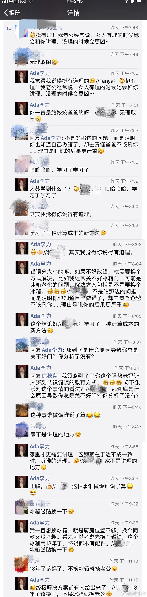

案例发出来，是想说明，“指出错误，对方改正”并不是唯一解决方案。执着于唯一，大概率会不如意。//@魔法师M:……连您这么理智的美女都这样……有没有讲理的女人呢
@Ada李力:
圈里发个八卦，讨论还是蛮有意思的。评论看截图。
—-
姣姣爸爸承包了晚餐里一个菜，在厨房时间长些，看到我三次都没关好冰箱门，他提醒嗓门一次比一次大。
第三次我不虚心承认错误了，说：“你的指责带来的损失，可能比冰箱门没关好费些电还要大些”
姣姣爸爸：“什么损失？”
我：“你说我，我就很不开心，情绪上有损失。如果找茬，稍后逮着机会再把你吼一顿，你也会有损失”
姣姣爸爸：“…”
—-
姣姣爸爸承包了晚餐里一个菜，在厨房时间长些，看到我三次都没关好冰箱门，他提醒嗓门一次比一次大。
第三次我不虚心承认错误了，说：“你的指责带来的损失，可能比冰箱门没关好费些电还要大些”
姣姣爸爸：“什么损失？”
我：“你说我，我就很不开心，情绪上有损失。如果找茬，稍后逮着机会再把你吼一顿，你也会有损失”
姣姣爸爸：“…”
- 